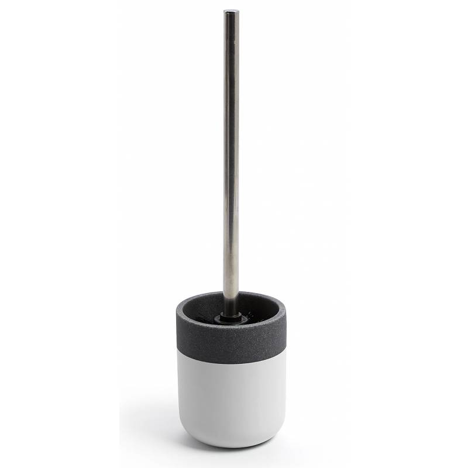
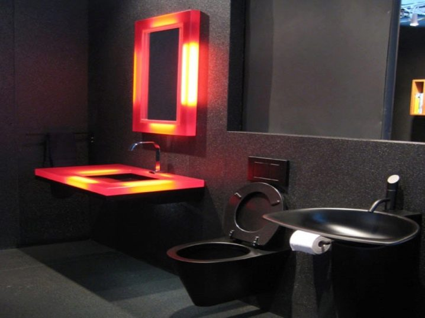
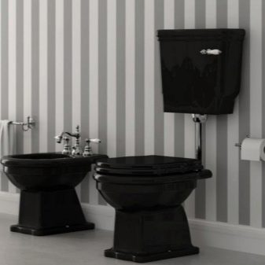

Juodos tualeto dubenys: modernios dizaino tendencijos | northerndefenders.info
2020.10.29 08:29
Menu Home Kuchyne Dapur Furniture Mobilier Baldai
Juodos tualeto dubenys: modernios dizaino tendencijos
Juodasis tualetas ilgai laikomas labai neįprasta tirpalo tualeto interjere, nes jis neatitiko tradicinės santechnikos pasirinkimo sampratos. Tačiau laikui bėgant mados ir įvairių interjero stilių tokia santechnika labai aktualu. Kartais net šios spalvos tualetas laikomas gerbūvio namuose ar butu rodikliu.
Toks sprendimas reikalauja harmoningo tualeto dubenėlio derinio su kitais vonios ar tualeto reikmenimis, taip pat tam tikro stiliaus dominavimu interjere. Todėl būtina iš anksto susipažinti su visais nenuosekliais pasirinktais santechnika tokiu spalviniu sprendimu ir jo priežiūros taisyklėmis.
Contents
1 Privalumai ir trūkumai 2 Veislės 3 Suderinamumas su interjero stiliumi 4 Gražūs pavyzdžiaiPrivalumai ir trūkumai
Kaip ir bet kokio tipo santechnikos srityje, juodais gaminiais yra teigiamų ir neigiamų savybių.
Apsvarstykite tokių modelių privalumus.
Panašus tualeto indo atspalvis yra svarbi interjero savybė. Tai juoda santechnika, kuri tampa pagrindiniu akcentu, pabrėžiant pasirinkto stiliaus savybes. Kadangi tokia santechnika nėra tokia populiari, kaip balti modeliai, ji visada atrodo labai originali. Toks tualetas yra jūsų vonios kambario akcentas ir maloniai nustebins svečius. Puošiant interjero su panašiomis tualetomis, gana lengva sukurti kontrasto žaidimą. Vonios apdailai ir dekoravimui galite pasirinkti beveik bet kokią spalvą pagal pasirinktą stilių. Tai yra juodos santechnikos fone, kad jokio kito atspalvio nebus išblukęs, bet atvirkščiai, pasirodys visame jo prisotintame sluoksnyje. Populiariausi tualeto dubenėlio ir kitų santechnikos ar priedų derinių variantai - juodai balta ir juodronė. Nesvarbus juodojo tualeto fone pastelinėmis spalvomis atrodys sienos ir aksesuarai. Tarp šių variantų galite rasti produktus gana demokratiška kaina. Nepaisant tokio įsigijimo galimybės, juoda vandentiekio sistema daro vonios kambarį ir tualetą labiau išreikštą. Toks produktas pabrėžia savininkų statusą ir kartu su kompetentingais pasirinktais priedais netgi suteikia interjerui prabangą.
Be pliusų, tokio tipo tualeto dubenėlis turi daugybę trūkumų.
Būtina, kad juodas tualeto dubuo būtų suderintas su kitais santechnikos gaminiais. Priešingu atveju visa vonios kambario dizaino koncepcija bus pažeista. Tai sukelia papildomas išlaidas, susijusias su santechnikos remontu, jei tualetas sujungtas su vonios kambariu. Ant tamsesnio paviršiaus aiškiau matomos pėdsakai ir dėmės, susidariusios dėl medžiagų, sudarančių vandentiekio vandenį. Be to, dulkės ant juodo paviršiaus bus labiau pastebimos. Todėl ši parinktis reikalauja dažniau ir kruopščiau išvalyti. Ypač jautrūs žmonės juodas tualetas gali atrodyti gana niūrus interjero objektas, ypač kartu su kita tamsia santechnika.
Jei perkate juodą tualetinį dubenį patalpoms, sienoms arba grindims, kurie yra dažyti tamsiomis atspalvėmis, reikės atlikti papildomus remontus, priešingu atveju atmosfera panašioje patalpoje nebus palankiausia.
Veislės
Tiek baltos, tiek juodos tipo tualetai yra įvairių tipų dizaino.
Populiariausios tamsios santechnikos rūšys apima keletą modelių:
Lauke Dizainas reiškia, kad prietaisas tvirtinamas tiesiai prie grindų. Jie gali turėti monobloko konstrukciją, kurioje tualeto indas tiesiogiai apima įrenginio talpą. Atskirti modeliai, atvirkščiai, reiškia, kad bakas yra atskirtas nuo pagrindinio korpuso. Ne mažiau populiarus yra dizainas įveskite bidė . Šis mažas dalykas su įmontuotomis elektroninėmis funkcijomis gali ne tik sutaupyti vietos kambaryje, bet ir tapti labai patogiu ir daugiafunkciniu papildymu jūsų tualetui. Siena montuojama Struktūros tvirtinamos tiesiai prie sienos ir, kaip yra, "pakimba" virš grindų. Ši versija yra labai kompaktiška ir originali. Kai išleidimo talpykla yra įmontuota į sieną, tualetas neužima laisvos vietos, kuri beveik visada reikalinga vonios kambaryje arba tualetu. Verta apsvarstyti dvi neigiamas savybes tokių tualeto dubenėlių. Montavimo darbai yra gana sudėtingi, jų montavimas reikalauja profesionaliojo meistro, kuris reikalauja papildomų išlaidų. Be to, panašios juodos spalvos modeliai dažniausiai parduodami už gana didelę kainą.
Juodos tualeto dubenys taip pat skiriasi formos. Jie yra:
ovalus , ši versija tinka beveik bet kokiam interjero stiliui; apvalus modeliai yra kompaktiškesni; kvadratas ar stačiakampis Dizainas bus ideali ekstravagantiškų stilistikos krypčių.
Svarbus juodųjų santechnikos modelių klasifikavimo bruožas yra jų paviršiaus išvaizda.
Yra keletas produktų rūšių:
Blizgus. Jie turi būdingą blizgesį ir perpildymą. Renkantis šį modelį, turite rūpintis apšvietimo ypatybėmis tualetu. Matinis struktūros turi atitinkamą paviršių. Tai atrodo labai originalus, tačiau tarša dėl tokių prietaisų kartais yra labiau pastebima, ypač dėl bet kokių aliejingų dėmių. Kartais juodos spalvos yra tamsiai pilkos spalvos dėl metalinio švytėjimo. Metalinis efektas daro tualeto paviršiaus išvaizdą dar įdomesnį. Ši galimybė puikiai derinama su šiuolaikiniais interjero stiliais. Eksperimentai dažnai naudoja paviršiaus tipo ir spalvų kombinacijos . Tualeto dubenėlio dangtis gali būti blizgus, o pats kūnas turi matinį paviršių. Taip pat galite suderinti kontrastingų spalvų.
Pavyzdžiui, naudojant juodus duomenis kūnui su baltuoju, galite derinti originalias klasikines ir šiuolaikiškas.
Suderinamumas su interjero stiliumi
Renkantis juodus tualetus, pagrindinis atskaitos taškas yra interjero kryptis, kuri pasirenkama tualetui apsirengti.
Apsvarstykite populiariausias sąvokas:
Populiariausias stilius - Art Deco . Tamsi santechnika pabrėžia prabangą ir glaustumą šia kryptimi. Populiariausi forma yra ovalo formos. Ši galimybė puikiai derinama su aukso arba bronzos aksesuarais. Kitas populiarus stilius, kuriame tamsi vandentiekis atrodo aktualus - minimalizmas . Šio dizaino monochrominių spalvų dominavimas leidžia jums derinti ryškius priedus su juodu tualeto dubeniu. Matiniai variantai bus puikus stiliaus priedas aukštųjų technologijų . Jie bus visiškai suderinti su aiškiomis šios krypties geometrinėmis linijomis. Šioje koncepcijoje ypač darni bus kvadratinio ar stačiakampio produkto sąvoka.
Gražūs pavyzdžiai
Kad galėtumėte pasirinkti iš tiesų originalaus juodojo tualeto patalpą, dizaineriai siūlo keletą sprendimų, kurie skiriasi savo originalumu:
Vandentiekio atvejis neturi būti monofoniškas. Šiuolaikinės technologijos ir platus juodų gaminių pasirinkimas parduotuvėse leidžia nusipirkti tualeto dubenį, puoštą ornamentais augaliniais ar kitais modeliais.
Juodoji tualetas puikiai dera su santechnika, papuošta raudonai geltonu apšvietimu. Toks apšvietimas sukuria ypatingą atmosferą vonios kambaryje arba tualetu.
Puikus vaizdas yra juodojo tualeto dubenėlio su aukso apdailos sienomis derinys. Iš baldų iš tamsios medienos ir aksesuarų, kurie imituoja auksą, galite sukurti prabangų interjerą vonioje arba tualetu.
Jei tualetu ar vonios kambariu yra juodi santechnikos daiktai, svarbu, kad ši kompozicija praskiedžiama ryškiais akcentais. Tai gali būti įvairūs priedai, pavyzdžiui, vazos ir figūrėlės. Jei kambarys yra erdvinis, tuomet jūs galite papuošti sienas nuotraukomis ar nuotraukomis.
Nebijokite eksperimentų pasirinkdami santechniką. Jei atsižvelgsite į visus juodojo tualeto naudojimo niuansus, tai gali tapti unikaliu jūsų namų ar buto interjero objektu. Tokia detalė ne tik pabrėžia pasirinkto stiliaus eleganciją, bet ir suteikia kambariui ypatingą grožio ir estetikos atmosferą.
Kartu su tinkama apdaila ir dekoru, juoda santechnika labai dekoruos vonios kambarį ir nustebins visus jūsų namuose lankytojus.
Vieno iš tualeto dubenėlio juodos spalvos modelio privalumai aprašyti žemiau esančiame vaizdo įraše.
Leave a Reply Cancel reply
Recent Posts
Vlastnosti podkrovia
Sofos lova virtuvėje
Kuhinjske elektronske tehtnice
Panasonic Steamer
Juicer mekanik
Juodos grindų plytelės interjero dizaino Dekoratyvinė staliukas: modernios modernios idėjos Lauko juodos ir baltos plytelės interjere Juodos lovos Juodos užuolaidos Juodos sofos interjere- Dubenys | C&D Style
- Dubenys, dubenėliai | Gerduva.lt
- Kiek tualeto dubenys sveria? - Įranga 2019
- Kaip valyti tualeto dubenį iš akmens
- 11 geriausių tualeto dubenys - Reitingas 2019
- Tualeto dubuo | designremont.club
- Tualeto dubenų valymas - Panelių Gyvenimas - 2020
- Geriausių tualeto dubenių įvertinimas pagal vartotojų ...
- Juodos tualeto dubenys: modernios dizaino tendencijos ...
- 10 geriausių tualeto dubenys Roca - Reitingas 2019
- Dubenys | C&D Style
Geriausių tualeto dubenių įvertinimas pagal vartotojų atsiliepimus. Remontas Ir Nekilnojamasis Turtas May 3, 2018 be tualeto dabar negali padaryti jokios vieną butą.Iš pradžių gali atrodyti, kad šis objektas gali tarnauti amžinai. Bet iš tikrųjų, laikui bėgant tualetas nebeatitinka estetinius reikalavimus.
- Dubenys, dubenėliai | Gerduva.lt
Tualeto dubenys, pagamintos iš dirbtinio ir natūralaus akmens, taip pat stiklo, priklauso prabangos prekėms. Jie turi didelę kainą, tačiau jie turi gražų dizainą ir puikiai tinka interjere Art Nouveau stiliaus. Dirbtinis akmuo ir stiklas yra mažai stiprus, tačiau gaminant tualetinius dubenis šioms medžiagoms pridedami specialūs ...
- Kiek tualeto dubenys sveria? - Įranga 2019
Tualeto indų valymo žingsniai. Išskyrus tuos atvejus, kai tualeto dubenyje yra gilūs ir tamsūs žiedai, valymo tualeto dubenys gali būti greitai ir lengvai. Atlikite šiuos veiksmus, jei norite išvalyti tualetinį indą: Atidarykite langus ir uždėkite apsaugines gumines arba lateksines pirštines. Pasukite tualeto dangtį ir sėdynę.
- Kaip valyti tualeto dubenį iš akmens
Dubenys, dubenėliai Rūšiuoti pagal Pozicija Pavadinimas Kaina Prekės ženklas Rūšiuoti pagal Nustatyti mažėjimo tvarka Rodyti
- 11 geriausių tualeto dubenys - Reitingas 2019
Slapukų naudojimo sąlygos. Naudodamiesi bm.lv svetaine jūs sutinkate su šiomis naudojimo sąlygomis. „TehEksperts Ltd“ imasi visų priemonių, kad užtikrintų maksimalų saugų svetainės naršymą ir apsaugotų kiekvieno vartotojo duomenis.
- Tualeto dubuo | designremont.club
Puodeliai Lėkštės, lėkštutės Dubenys, dubenėliai. Emaliuoti indai Bambukiniai indai Indai serviravimui Indai maistui laikyti Stoveliai virtuvei Indai gėrimams. Stikliniai indai su kraneliu Grafinai, ąsočiai, buteliai Stiklinės, taurės, šiaudeliai. ... Keičiama tualeto šepečio galvutė Metia
- Tualeto dubenų valymas - Panelių Gyvenimas - 2020
Originalaus dizaino dubenys stalo serviravimui. Užeikite į C&D Style internetinę parduotuvę ir įsigykite Jums patinkančius indus.
- Geriausių tualeto dubenių įvertinimas pagal vartotojų ...
Tualeto paaukštinimai mažiausia kaina internetu. Paskubėk, dabar geriausias laikas pirkti...
- Juodos tualeto dubenys: modernios dizaino tendencijos ...
Roca tualetas, kuriam geriau pasirinkti ir pirkti. Pakabinami ir montuojami modeliai „The Gap“, „Dama Senso“, Viktorija, Debba. Geriausi tualetai Roca 2018 - įvertinimas.
- 10 geriausių tualeto dubenys Roca - Reitingas 2019
Juodos tualeto dubenys: modernios dizaino tendencijos Juodasis tualetas ilgai laikomas labai neįprasta tirpalo tualeto interjere, nes jis neatitiko tradicinės santechnikos pasirinkimo sampratos. Tačiau laikui bėgant mados ir įvairių interjero stilių tokia santechnika labai aktualu.
Geriausių tualeto dubenių įvertinimas pagal vartotojų atsiliepimus. Remontas Ir Nekilnojamasis Turtas May 3, 2018 be tualeto dabar negali padaryti jokios vieną butą.Iš pradžių gali atrodyti, kad šis objektas gali tarnauti amžinai. Bet iš tikrųjų, laikui bėgant tualetas nebeatitinka estetinius reikalavimus.
Tualeto dubenys, pagamintos iš dirbtinio ir natūralaus akmens, taip pat stiklo, priklauso prabangos prekėms. Jie turi didelę kainą, tačiau jie turi gražų dizainą ir puikiai tinka interjere Art Nouveau stiliaus. Dirbtinis akmuo ir stiklas yra mažai stiprus, tačiau gaminant tualetinius dubenis šioms medžiagoms pridedami specialūs ...
Tualeto indų valymo žingsniai. Išskyrus tuos atvejus, kai tualeto dubenyje yra gilūs ir tamsūs žiedai, valymo tualeto dubenys gali būti greitai ir lengvai. Atlikite šiuos veiksmus, jei norite išvalyti tualetinį indą: Atidarykite langus ir uždėkite apsaugines gumines arba lateksines pirštines. Pasukite tualeto dangtį ir sėdynę.
Dubenys, dubenėliai Rūšiuoti pagal Pozicija Pavadinimas Kaina Prekės ženklas Rūšiuoti pagal Nustatyti mažėjimo tvarka Rodyti
Slapukų naudojimo sąlygos. Naudodamiesi bm.lv svetaine jūs sutinkate su šiomis naudojimo sąlygomis. „TehEksperts Ltd“ imasi visų priemonių, kad užtikrintų maksimalų saugų svetainės naršymą ir apsaugotų kiekvieno vartotojo duomenis.
Puodeliai Lėkštės, lėkštutės Dubenys, dubenėliai. Emaliuoti indai Bambukiniai indai Indai serviravimui Indai maistui laikyti Stoveliai virtuvei Indai gėrimams. Stikliniai indai su kraneliu Grafinai, ąsočiai, buteliai Stiklinės, taurės, šiaudeliai. ... Keičiama tualeto šepečio galvutė Metia
Originalaus dizaino dubenys stalo serviravimui. Užeikite į C&D Style internetinę parduotuvę ir įsigykite Jums patinkančius indus.
Tualeto paaukštinimai mažiausia kaina internetu. Paskubėk, dabar geriausias laikas pirkti...
Roca tualetas, kuriam geriau pasirinkti ir pirkti. Pakabinami ir montuojami modeliai „The Gap“, „Dama Senso“, Viktorija, Debba. Geriausi tualetai Roca 2018 - įvertinimas.
Juodos tualeto dubenys: modernios dizaino tendencijos Juodasis tualetas ilgai laikomas labai neįprasta tirpalo tualeto interjere, nes jis neatitiko tradicinės santechnikos pasirinkimo sampratos. Tačiau laikui bėgant mados ir įvairių interjero stilių tokia santechnika labai aktualu.
  